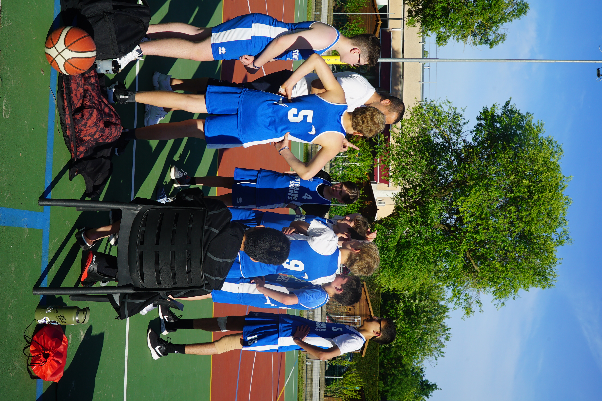
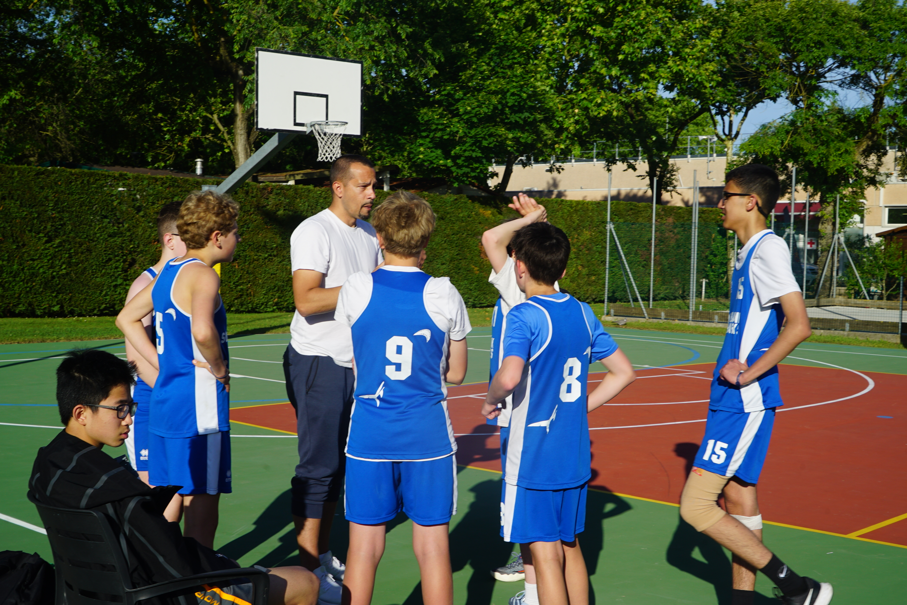

Making this website...
Official profiles, channels, and direct contacts.
Official 1545 tournament records
Blitz & rapid online matches
Bullet & puzzle training
Python repositories & micro-apps
Live Python code execution
Video edits & athletic highlights
Articles and analytical logs
Daily streak & language stats
Curated style storefront
Handmade ceramic works
kabirbhuchar@gmail.com
Hover over any card to expand quick specs or click to inspect full details.
1545 FIDE tournament rating specializing in sharp tactical combat and aggressive 1.e4 openings.
Inspect Profile →
6'0" Center dominating paint defense, rim protection, and high-intensity rebounding.
Inspect Profile →Building automated Python backends, web micro-apps, and deploying to GitHub Pages.
Inspect Profile →Advanced classical violin performance executing rigorous Suzuki Book 3 repertoire.
Inspect Profile →A deep dive into recent tournaments, leadership roles, and technical builds.
Captaining the team through a high-stakes basketball tournament. Required on-court leadership and paint dominance.

The technical breakdown of building this portfolio with a Python static-site generator, compiled into fast, dependency-free HTML/CSS/JS.
Representing the school team with top-board performance, securing the Best Player award, and competing in external circuits.
Development scripts, presentation slide decks, and design portfolios.
Dynamic visual slide decks engineered with minimalist layouts.
Curated archive of 9+ comprehensive design project portfolios.
↑↓ to navigate · Enter to open · Esc to close